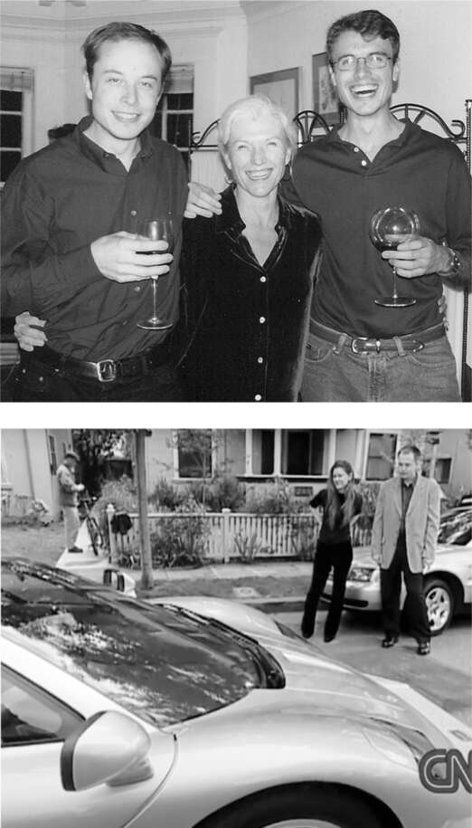

Hành trình bản đồ
Một số cải tiến tốt nhất đến từ việc kết hợp hai sáng kiến trước đó. Ý tưởng mà Elon và Kimbal có vào đầu năm 1995, đúng lúc web bắt đầu phát triển theo cấp số nhân, rất đơn giản: đưa một danh mục doanh nghiệp có thể tìm kiếm trực tuyến và kết hợp nó với phần mềm bản đồ cung cấp chỉ đường cho người dùng. Không phải ai cũng nhìn thấy tiềm năng. Khi Kimbal có cuộc họp tại Toronto Star, nơi xuất bản Sách Vàng ở thành phố đó, vị chủ tịch đã cầm một cuốn danh bạ dày cộp ném vào anh. "Cậu thực sự nghĩ rằng mình sẽ thay thế được cái này sao?", ông hỏi.
Hai anh em thuê một văn phòng nhỏ ở Palo Alto chỉ đủ chỗ cho hai bàn làm việc và hai chiếc giường gấp. Trong sáu tháng đầu, họ ngủ tại văn phòng và tắm tại YMCA. Kimbal, người sau này trở thành đầu bếp và chủ nhà hàng, đã mua một bếp điện và thỉnh thoảng nấu ăn. Nhưng chủ yếu họ ăn ở Jack in the Box, vì nó rẻ, mở cửa 24/24 và chỉ cách đó một dãy nhà. "Tôi vẫn có thể kể tên từng món trong thực đơn", Kimbal nói. "Nó cứ in sâu vào trong đầu tôi." Elon trở thành người hâm mộ món cơm teriyaki.
Sau vài tháng, họ thuê một căn hộ không có đồ đạc và vẫn giữ nguyên như vậy. "Tất cả những gì nó có là hai tấm nệm và rất nhiều hộp Cocoa Puffs", Tosca nói. Ngay cả sau khi chuyển đến, Elon vẫn dành nhiều đêm ở văn phòng, ngủ gục dưới bàn làm việc khi kiệt sức vì viết mã. "Anh ấy không có gối, không có túi ngủ. Tôi không biết anh ấy đã làm thế nào", Jim Ambras, một nhân viên ban đầu, nói. "Thỉnh thoảng, nếu chúng tôi có cuộc họp khách hàng vào buổi sáng, tôi phải bảo anh ấy về nhà tắm rửa."
Navaid Farooq từ Toronto đến làm việc cùng họ, nhưng anh nhanh chóng nhận ra mình bất đồng với Musk. Vợ anh, Nyame, nói với anh: "Nếu anh muốn giữ tình bạn này, thì công việc này không dành cho anh." Vậy nên anh ấy đã nghỉ việc sau sáu tuần. "Tôi biết rằng tôi chỉ có thể làm việc với anh ấy hoặc làm bạn với anh ấy, chứ không thể cả hai, và tôi thấy làm bạn thú vị hơn."
Errol Musk, khi đó vẫn chưa xa cách các con trai, đã đến thăm từ Nam Phi và cho họ 28.000 đô la cùng một chiếc xe cũ nát ông mua với giá 500 đô la. Mẹ của họ, Maye, từ Toronto đến thăm thường xuyên hơn, mang theo thức ăn và quần áo. Bà cho họ 10.000 đô la và để họ dùng thẻ tín dụng của mình vì họ chưa được cấp thẻ.
Họ có bước đột phá đầu tiên khi đến thăm Navteq, công ty sở hữu cơ sở dữ liệu bản đồ. Công ty đã đồng ý cấp phép miễn phí cho anh em nhà Musk cho đến khi họ bắt đầu có lãi. Elon đã viết một chương trình kết hợp bản đồ với danh sách các doanh nghiệp trong khu vực. Kimbal nói: "Bạn có thể dùng con trỏ để phóng to và di chuyển xung quanh bản đồ. Điều đó hoàn toàn bình thường ngày nay, nhưng vào thời điểm đó, thật sự rất ấn tượng. Tôi nghĩ Elon và tôi là những người đầu tiên thấy nó hoạt động trên internet." Họ đặt tên công ty là Zip2, viết tắt của "Zip to where you want to go" (Đến nơi bạn muốn).
Elon được cấp bằng sáng chế cho "dịch vụ thư mục mạng tương tác" mà anh đã tạo ra. Bằng sáng chế nêu rõ: "Phát minh này cung cấp một dịch vụ truy cập mạng tích hợp cả thư mục doanh nghiệp và cơ sở dữ liệu bản đồ."
Đối với cuộc gặp gỡ đầu tiên với các nhà đầu tư tiềm năng, họ phải bắt xe buýt lên đường Sand Hill Road vì chiếc xe mà bố họ cho đã bị hỏng. Nhưng sau khi thông tin về công ty lan truyền, các nhà đầu tư mạo hiểm đã yêu cầu được đến gặp họ. Họ mua một khung máy tính lớn và đặt một trong những chiếc máy tính nhỏ của họ vào bên trong, để khách đến thăm nghĩ rằng họ có một máy chủ khổng lồ. Họ đặt tên cho nó là "Cỗ máy kêu Ping", dựa theo một tiểu phẩm của Monty Python. Kimbal nói: "Mỗi khi các nhà đầu tư đến, chúng tôi lại cho họ xem cái tháp, và chúng tôi cười vì nó khiến họ nghĩ rằng chúng tôi đang làm những thứ rất cao siêu."
Maye bay từ Toronto đến để giúp chuẩn bị cho các cuộc họp với các nhà đầu tư mạo hiểm, thường thức trắng đêm ở Kinko để in các bài thuyết trình. Bà nói: "Mỗi trang màu có giá một đô la, mà chúng tôi hầu như không đủ khả năng chi trả. Tất cả chúng tôi đều kiệt sức trừ Elon. Nó luôn thức khuya để viết mã." Khi nhận được những đề xuất đầu tiên từ các nhà đầu tư tiềm năng vào đầu năm 1996, Maye đã đưa các con trai của mình đến một nhà hàng sang trọng để ăn mừng. Khi thanh toán hóa đơn, bà nói: "Đây là lần cuối cùng chúng ta phải dùng thẻ tín dụng của mẹ."
Và đúng như vậy. Họ sớm kinh ngạc trước lời đề nghị đầu tư 3 triệu đô la vào công ty từ Mohr Davidow Ventures. Buổi thuyết trình cuối cùng cho công ty được lên lịch vào thứ Hai, và cuối tuần đó, Kimbal quyết định có một chuyến đi nhanh đến Toronto để sửa máy tính của mẹ anh, vì nó đã bị hỏng. Anh giải thích: "Chúng tôi yêu mẹ của mình." Khi anh rời đi vào Chủ nhật để bay trở lại San Francisco, anh đã bị các nhân viên biên giới Hoa Kỳ chặn lại tại sân bay. Họ kiểm tra hành lý của anh và thấy bản thuyết trình, danh thiếp và các tài liệu khác của công ty. Vì anh không có thị thực lao động Hoa Kỳ, họ không cho anh lên máy bay. Anh đã nhờ một người bạn đón anh ở sân bay và lái xe đưa anh qua biên giới, nơi anh nói với một nhân viên biên giới ít cảnh giác hơn rằng họ đang đi xem chương trình David Letterman. Anh đã kịp bắt chuyến bay muộn từ Buffalo đến San Francisco và đến kịp buổi thuyết trình.
Mohr Davidow rất thích bài thuyết trình và quyết định đầu tư. Công ty này cũng tìm một luật sư di trú để giúp hai anh em Musk xin thị thực lao động và cho mỗi người 30.000 đô la để mua xe. Elon đã mua một chiếc Jaguar E-type 1967. Khi còn nhỏ ở Nam Phi, anh đã thấy hình ảnh chiếc xe này trong một cuốn sách về những chiếc xe mui trần đẹp nhất từng được sản xuất, và anh đã tự hứa sẽ mua một chiếc nếu giàu có. “Đó là chiếc xe đẹp nhất mà bạn có thể tưởng tượng,” anh nói, “nhưng nó hỏng ít nhất mỗi tuần một lần.”
Các nhà đầu tư mạo hiểm đã sớm làm điều mà họ thường làm: đưa người quản lý có kinh nghiệm vào tiếp quản công ty từ những người sáng lập trẻ tuổi. Điều này đã xảy ra với Steve Jobs tại Apple và với Larry Page và Sergey Brin tại Google. Rich Sorkin, người từng phụ trách phát triển kinh doanh cho một công ty thiết bị âm thanh, được bổ nhiệm làm CEO của Zip2. Elon bị chuyển sang vị trí giám đốc công nghệ. Ban đầu, anh nghĩ sự thay đổi này sẽ phù hợp với mình; anh có thể tập trung vào việc xây dựng sản phẩm. Nhưng anh đã học được một bài học. “Tôi chưa bao giờ muốn làm CEO,” anh nói, “nhưng tôi học được rằng bạn không thể thực sự là giám đốc công nghệ hoặc sản phẩm trừ khi bạn là CEO.”
Cùng với những thay đổi này là một chiến lược mới. Thay vì tiếp thị sản phẩm trực tiếp đến các doanh nghiệp và khách hàng của họ, Zip2 tập trung vào việc bán phần mềm của mình cho các tờ báo lớn để họ có thể tạo ra các danh bạ địa phương của riêng mình. Điều này là hợp lý; các tờ báo đã có đội ngũ bán hàng đến gõ cửa các doanh nghiệp để bán quảng cáo và rao vặt cho họ. Knight-Ridder, New York Times, Pulitzer và Hearst đã đăng ký sử dụng. Các giám đốc điều hành của hai tờ báo đầu tiên đã tham gia hội đồng quản trị của Zip2. Tạp chí Editor & Publisher đã đăng một bài viết trang bìa có tựa đề “Siêu anh hùng mới của ngành báo chí: Zip2”, đưa tin rằng công ty đã tạo ra “một bộ cấu trúc phần mềm mới cho phép các tờ báo riêng lẻ nhanh chóng xây dựng các danh bạ quy mô lớn theo kiểu hướng dẫn thành phố.”
Đến năm 1997, Zip2 đã được 140 tờ báo thuê với mức phí bản quyền từ 1.000 đến 10.000 đô la. Chủ tịch của tờ Toronto Star, người đã ném cuốn Niên giám điện thoại vào Kimbal, đã gọi điện xin lỗi anh và hỏi Zip2 có muốn hợp tác không. Kimbal đồng ý.
Ngay từ những ngày đầu sự nghiệp, Musk đã là một người quản lý khắt khe, coi thường khái niệm cân bằng giữa công việc và cuộc sống. Tại Zip2 và mọi công ty sau đó, anh đã làm việc không ngừng nghỉ cả ngày lẫn đêm, không nghỉ phép, và anh mong đợi những người khác cũng làm như vậy. Sự nuông chiều duy nhất của anh là cho phép nghỉ giải lao để chơi game video cường độ cao. Đội Zip2 đã giành giải nhì trong một cuộc thi Quake toàn quốc. Họ đã có thể giành giải nhất, anh nói, nhưng một trong số họ đã làm hỏng máy tính của mình vì sử dụng quá mức.
Khi các kỹ sư khác về nhà, Musk đôi khi sẽ lấy mã họ đang làm việc và viết lại. Với sự đồng cảm kém, anh không nhận ra hoặc không quan tâm rằng việc sửa lỗi của ai đó một cách công khai — hoặc, như anh nói, “sửa cái mã ngu ngốc chết tiệt của họ” — không phải là cách để lấy lòng người khác. Anh chưa bao giờ là đội trưởng của một đội thể thao hay là thủ lĩnh của một nhóm bạn bè, và anh thiếu bản năng về tình đồng đội. Giống như Steve Jobs, anh thực sự không quan tâm liệu mình có xúc phạm hay đe dọa những người làm việc cùng mình hay không, miễn là anh thúc đẩy họ đạt được những thành tích mà họ nghĩ là không thể. “Nhiệm vụ của bạn không phải là làm cho mọi người trong nhóm yêu quý bạn,” anh nói tại một phiên họp điều hành của SpaceX nhiều năm sau đó. “Trên thực tế, điều đó phản tác dụng.”
Anh ấy nghiêm khắc nhất với Kimbal. “Tôi rất yêu quý em trai mình, nhưng làm việc chung với cậu ấy thật khó,” Kimbal nói. Những bất đồng của họ thường dẫn đến ẩu đả ngay tại văn phòng. Họ tranh cãi về chiến lược lớn, những chuyện nhỏ nhặt, và cả cái tên Zip2. (Kimbal và một công ty tiếp thị đã nghĩ ra cái tên này; Elon thì ghét nó.) “Lớn lên ở Nam Phi, đánh nhau là chuyện bình thường,” Elon nói. “Đó là một phần của văn hóa.” Họ không có văn phòng riêng, chỉ có vách ngăn, nên ai cũng chứng kiến. Trong một lần cãi vã tồi tệ nhất, họ vật lộn xuống sàn và Elon dường như sắp đấm vào mặt Kimbal, nên Kimbal đã cắn vào tay anh và xé ra một mảng thịt. Elon phải đến phòng cấp cứu để khâu và tiêm phòng uốn ván. “Khi căng thẳng tột độ, chúng tôi chẳng còn để ý đến ai xung quanh,” Kimbal nói. Sau này anh thừa nhận rằng Elon đã đúng về cái tên Zip2. “Đó là một cái tên dở tệ.”
Những người làm sản phẩm thực thụ luôn muốn bán trực tiếp cho người tiêu dùng, không muốn bị các bên trung gian làm rối tung mọi thứ. Musk cũng vậy. Anh cảm thấy thất vọng với chiến lược của Zip2, tự biến mình thành một nhà cung cấp vô danh cho ngành báo chí. “Cuối cùng chúng tôi lại chịu ơn các tờ báo,” Musk nói. Anh muốn mua tên miền “city.com” và trở thành một điểm đến cho người tiêu dùng, cạnh tranh với Yahoo và AOL.
Các nhà đầu tư cũng bắt đầu suy nghĩ lại về chiến lược của họ. Các hướng dẫn thành phố và danh bạ internet mọc lên như nấm vào mùa thu năm 1998, và chưa có cái nào sinh lời. Vì vậy, CEO Rich Sorkin quyết định sáp nhập với một trong số đó, CitySearch, với hy vọng rằng cùng nhau họ có thể thành công. Nhưng khi Musk gặp CEO của CitySearch, người đàn ông này khiến anh cảm thấy bất an. Với sự giúp đỡ của Kimbal và một số kỹ sư, Elon đã dẫn đầu một cuộc phản đối, làm hỏng vụ sáp nhập. Anh cũng yêu cầu được làm CEO một lần nữa. Thay vào đó, hội đồng quản trị đã cách chức chủ tịch của anh và giảm bớt vai trò của anh.
“Những điều tuyệt vời sẽ không bao giờ xảy ra với các nhà đầu tư mạo hiểm hay các nhà quản lý chuyên nghiệp,” Musk nói với tạp chí Inc. “Họ không có sự sáng tạo hay tầm nhìn.” Một trong những đối tác của Mohr Davidow, Derek Proudian, được bổ nhiệm làm CEO tạm thời và có nhiệm vụ bán công ty. “Đây là công ty đầu tiên của cậu,” ông nói với Musk. “Hãy tìm một người mua và kiếm một ít tiền, để cậu có thể làm công ty thứ hai, thứ ba và thứ tư của mình.”
Vào tháng 1 năm 1999, chưa đầy bốn năm sau khi Elon và Kimbal ra mắt Zip2, Proudian gọi họ vào văn phòng và nói với họ rằng Compaq Computer, đang tìm cách cải thiện công cụ tìm kiếm AltaVista của mình, đã đề nghị mua lại với giá 307 triệu đô la tiền mặt. Hai anh em đã chia cổ phần sở hữu 12% của họ theo tỷ lệ 60-40, vì vậy Elon ở tuổi hai mươi bảy đã ra đi với 22 triệu đô la và Kimbal với 15 triệu đô la. Elon đã rất ngạc nhiên khi tấm séc được gửi đến căn hộ của mình. “Tài khoản ngân hàng của tôi đã tăng từ khoảng 5.000 đô la lên 22.005.000 đô la,” anh nói.
Gia đình Musk đã tặng cha mình 300.000 đô la và mẹ 1 triệu đô la từ số tiền thu được. Elon đã mua một căn hộ rộng 1.800 foot vuông và chi tiêu hoang phí vào thứ mà đối với anh là sự nuông chiều tột độ: một chiếc xe thể thao McLaren F1 trị giá 1 triệu đô la, chiếc xe sản xuất nhanh nhất hiện có. Anh đồng ý cho CNN quay phim anh nhận xe. “Chỉ ba năm trước, tôi còn tắm ở nhà tập thể và ngủ trên sàn văn phòng, và giờ tôi đã có một chiếc xe trị giá triệu đô,” anh nói khi nhảy chân sáo trên phố trong lúc chiếc xe được dỡ xuống khỏi xe tải.
Sau cơn bốc đồng, anh nhận ra việc phô trương sự giàu có mới mẻ của mình là không đúng mực. "Một số người có thể cho rằng việc mua chiếc xe này là hành vi điển hình của một đứa trẻ con nhà giàu kiêu ngạo," anh thừa nhận. "Giá trị của tôi có thể đã thay đổi, nhưng tôi không thực sự nhận thức được điều đó."
Liệu chúng có thay đổi? Sự giàu có mới cho phép anh thỏa mãn mong muốn và thôi thúc của mình mà ít bị ràng buộc hơn, và điều này không phải lúc nào cũng đẹp mắt. Nhưng nhiệt huyết và quyết tâm theo đuổi sứ mệnh của anh vẫn còn nguyên vẹn.
Nhà văn Michael Gross khi đó đang ở Thung lũng Silicon để viết bài cho tạp chí Talk của Tina Brown về những cậu ấm cô chiêu mới giàu lên nhờ công nghệ. "Tôi đang tìm kiếm một nhân vật chính thích khoe khoang để có thể châm biếm," Gross nhớ lại nhiều năm sau. "Nhưng Musk mà tôi gặp năm 2000 lại tràn đầy niềm vui sống, quá dễ mến để có thể châm biếm. Anh ấy vẫn giữ nguyên sự vô tư và thờ ơ với những kỳ vọng như bây giờ, nhưng anh ấy rất thoải mái, cởi mở, quyến rũ và hài hước."
Sự nổi tiếng thật hấp dẫn đối với một đứa trẻ lớn lên không có bạn bè. "Tôi muốn được lên trang bìa của Rolling Stone," anh nói với CNN. Nhưng cuối cùng, anh lại có mối quan hệ phức tạp với sự giàu có. "Tôi có thể mua một hòn đảo ở Bahamas và biến nó thành lãnh địa riêng, nhưng tôi quan tâm đến việc xây dựng và tạo ra một công ty mới hơn," anh nói. "Tôi chưa tiêu hết số tiền thắng cược. Tôi sẽ dùng gần như toàn bộ số tiền đó cho một cuộc chơi mới."

Ăn mừng việc bán Zip2 với Maye và Kimbal; nhận chiếc McLaren với Justine